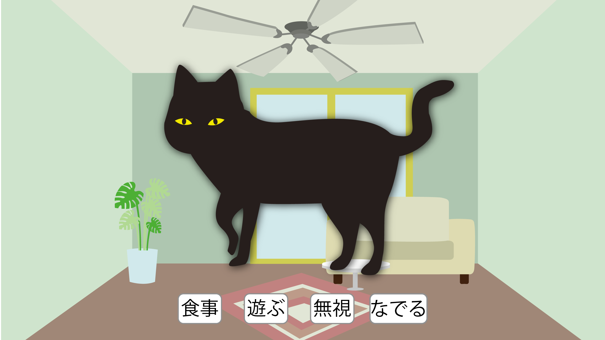
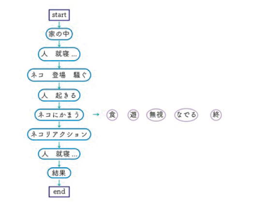
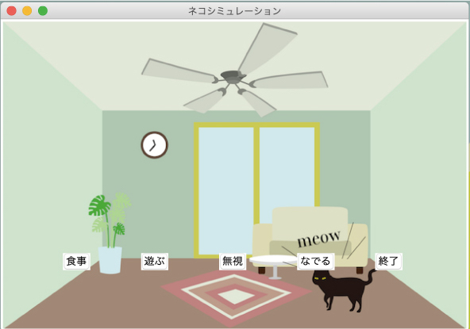
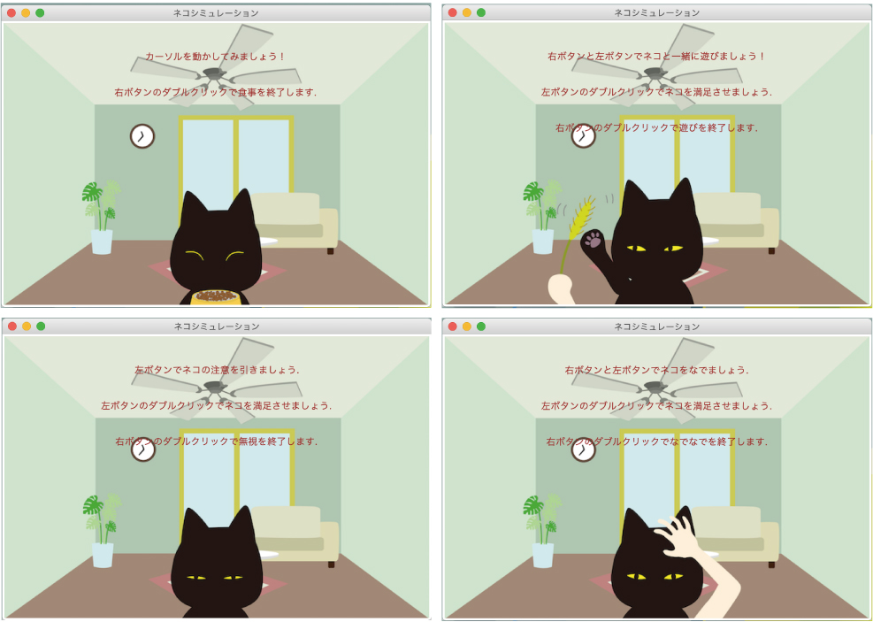
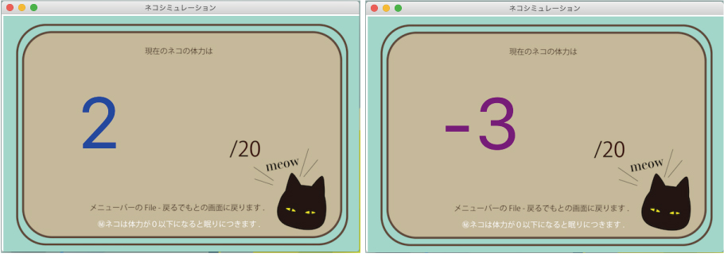
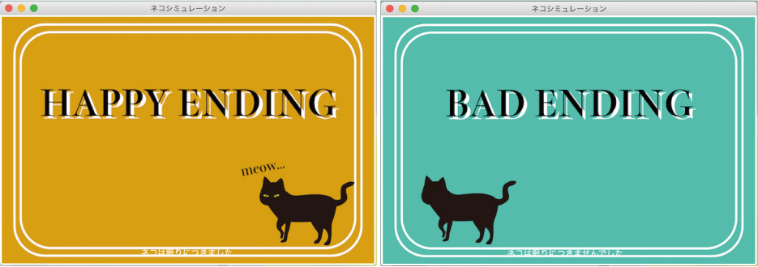
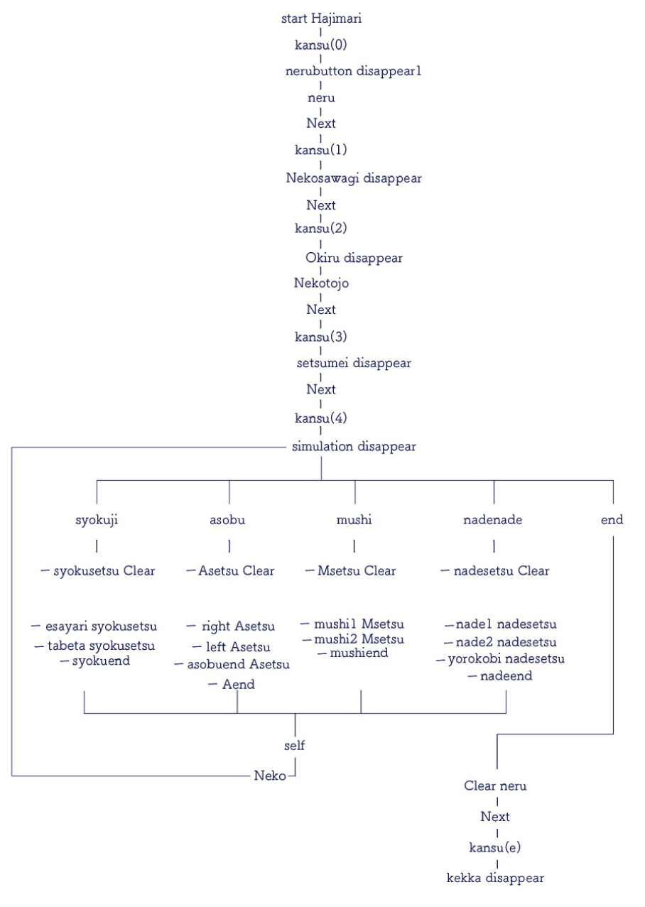

---Pythong---
ネコの日常
飼い主を悩ます猫の夜の運動会の事例を紹介するゲーム
◴ 2020/1/8-2020/1/31 ✎ Python Illustrator

---Pythong---
ネコの日常
飼い主を悩ます猫の夜の運動会の事例を紹介するゲーム
◴ 2020/1/8-2020/1/31
✎ Python Illustrator
WORK

飼い主が寝ようとすると猫が騒ぎ出し猫の夜の運動会が 始まる。一緒に遊んで猫の体力を無くし猫が眠りにつく とハッピーエンド、猫に体力が余ったまま終わってしま うとバッドエンドとなる。
ネコと一緒に遊ぶ
食事(左上) 遊ぶ(右上) 無視(左下) なでる(右下)
ポーズ画面
エンディング
MECHANISM
